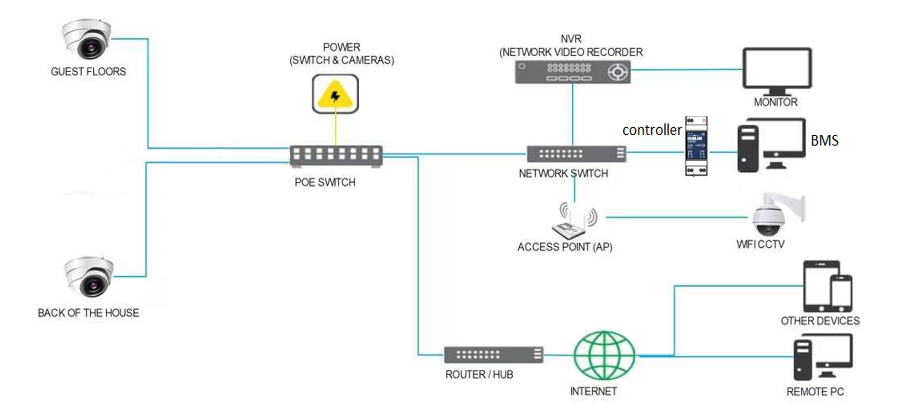

Closed-Circuit Television Lab
CCTV and its Role in Smart Building
Closed-Circuit Television (CCTV) refers to a network of security cameras and monitoring systems designed to enhance surveillance and safety within a building or facility. In Smart Buildings, CCTV systems are integrated with advanced technologies such as motion detection, facial recognition, and artificial intelligence to provide real-time monitoring and data analytics. By working seamlessly with other building systems, CCTV plays a critical role in creating safer, more secure, and intelligent environments, contributing to the overall efficiency and peace of mind within modern smart buildings.
Mission of the CCTV Lab
The CCTV Laboratory is dedicated to providing students and industry professionals with a comprehensive learning platform focused on the design, integration, and management of CCTV systems. The lab aims to equip participants with the skills to configure and optimize CCTV networks, ensuring effective system components such as cameras, servers, storage, and monitoring stations work together seamlessly. Emphasizing system management, the laboratory focuses on teaching how to monitor, maintain, and troubleshoot integrated CCTV systems within smart building environments. By combining hands-on practice with theoretical knowledge, the laboratory prepares professionals to address the complexities of CCTV system management and contribute to enhanced building security and operational efficiency.
Learn more about our
DL Smart Building Solutions.
